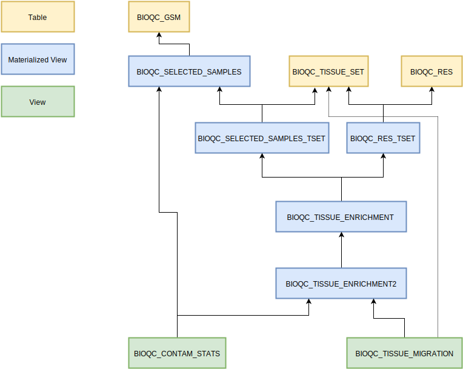

6 Analyse Contamination
The heartpiece of the study is this sql script which identifies heterogenous samples. In this section we will go through the different analysis steps performed in the script.

6.1 Input Tables
BIOQC_SELECTED_SAMPLES: the samples resulting from the selection process including metadataBIOQC_TISSUE_SET: the manual mapping of tissues to signatures (“expected signatures”)BIOQC_RES: the p-values for each sample and signature (pre-filtered for having a p-value < 0.05)
6.2 Processing Steps explained
6.2.1 BIOQC_SELECTED_SAMPLES_TSET
We join BIOQC_SELECTED_SAMPLES on BIOQC_TISSUE_SET to attach the tissue group and the respective signatures to each sample.
Example: The table rows for the colon sample GSM1234 could look like:
GSM TISSUE TISSUE_SET TGROUP EXP_SIGNATURE EXP_SIGNATURE_NAME
GSM1234 colon gtex_all colon 543 Colon
GSM1234 colon gtex_solid intestine 543 Colon
GSM1234 colon gtex_solid intestine 544 Jejunum6.2.2 BIOQC_RES_TSET
We join the BioQC results (pvalue for each signature and sample) from BIOQC_RES with BIOQC_TISSUE_SET to map the signatures back to their tissue group.
Example: For a result
GSM SIGNATURE PVALUE
GSM1234 544 1e-10
GSM1234 543 1e-5the table rows could look like
GSM FOUND_SIG PVALUE FOUND_SIG_NAME FOUND_TGROUP TISSUE_SET
GSM1234 544 1e-10 Jejunum jejunum gtex_all
GSM1234 544 1e-10 Jejunum intestine gtex_solid
GSM1234 543 1e-5 Colon colon gtex_all
GSM1234 543 1e-5 Colon intestine gtex_solid6.2.3 BIOQC_TISSUE_ENRICHMENT
We now match the found onto the expected tissue groups by joining BIOQC_SELECTED_SAMPES_TSET with BIOQC_RES_TSET on GSM and TISSUE_SET. We calculate the Enrichment Ratio as \(\log_{10}(p_{expected\_sig} / p_{found\_sig})\).
For the above example tables, we would get:
GSM TISSUE TISSUE_SET TGROUP EXP_SIGNATURE EXP_SIGNATURE_NAME FOUND_SIG FOUND_SIG_NAME ENRICHMENT_RATIO
GSM1234 colon gtex_all colon 543 Colon 543 Colon 0.0
GSM1234 colon gtex_all colon 543 Colon 544 Jejunum 5.0
...We filter out rows where the found signature is in the list of expected sigantures for the respective tissue group:
GSM TISSUE TISSUE_SET TGROUP EXP_SIGNATURE EXP_SIGNATURE_NAME FOUND_SIG FOUND_SIG_NAME ENRICHMENT_RATIO
GSM1234 colon gtex_all colon 543 Colon 544 Jejunum 5.0
...6.2.4 BIOQC_TISSUE_ENRICHMENT2
combine expected signature by taking the minimal enrichment ratio for each expected signature.
Example:
GSM TISSUE TGROUP EXPECTED FOUND ENRICHMENT_RATIO
GSM888 jejunum intestine colon liver_fetal 12
GSM888 jejunum intestine colon liver 8
GSM888 jejunum intestine jejunum liver_fetal 5
GSM888 jejunum intestine jejunum liver 4will be combined into
GSM TGROUP EXPECTED FOUND ENRICHMENT_RATIO RANK
GSM888 intestine liver_fetal 5 1
GSM888 intestine liver 4 1if multiple infiltrating tissues are found, a rank is calculated.
6.2.5 BIOQC_CONTAM_STATS
Add year, country and organism to each sample from BIOQC_TISSUE_ENRICHMENT2.
6.2.6 BIOQC_TISSUE_MIGRATION
Add origin and destination tissue groups for each sample by mapping the found signatures back to tissue groups.
Example:
GSM TISSUE_SET ORIGIN FOUND_SIG FOUND_SIG_NAME ENRICHMENT_RATIO DESTINATION
GSM1234 gtex_all colon 544 Jejunum 5 jejunum